Префектура Коти · от Мурото до Ино · еда и ремёсла
Шесть адресов из песни ёсакой: киты, вяленая рыба, бумага и кораллы
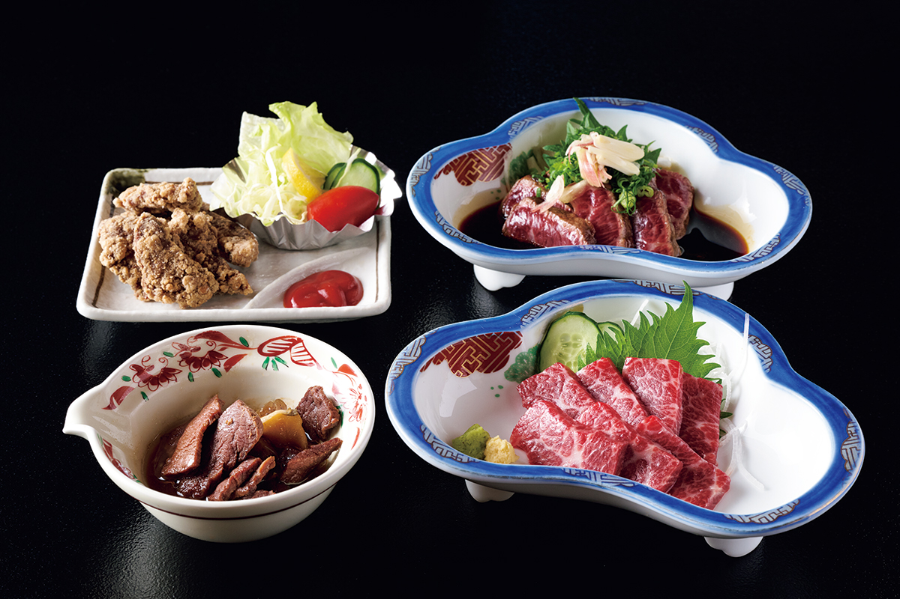
Песня ёсакой-наруко-одори работает и как гастрономическая карта: в куплетах упоминаются киты залива Тоса, сушёная рыба Мимасэ и другие местные продукты. Пройдём по шести адресам, которые она называет.
Море
Китовый стол в Мурото
В четвёртом куплете поётся: „В нашем заливе плавают киты и пускают фонтаны“. Залив Тоса действительно один из главных китовых районов страны, а город Мурото считают родиной тосского китобойного промысла: когда-то флотилии выходили в море и гнали кита группой, судно за судном. Сегодня промысел ограничен исследовательским выловом и китами, попавшими в ставные сети, но на кухню это не влияет: если кит оказался на берегу, его ждёт стол рёкана «Кагэцу» в Мурото.
Рёкан работает с 1925 года и держит марку на морепродуктах, в том числе на кинмэдае, местной глубоководной рыбе с золотистыми глазами. Китовая часть меню самая интересная: сэдзури, язык кита, редкие части унэсу, а хвостовое мясо идёт на татаки и сашими: тающие, на редкость нежные.
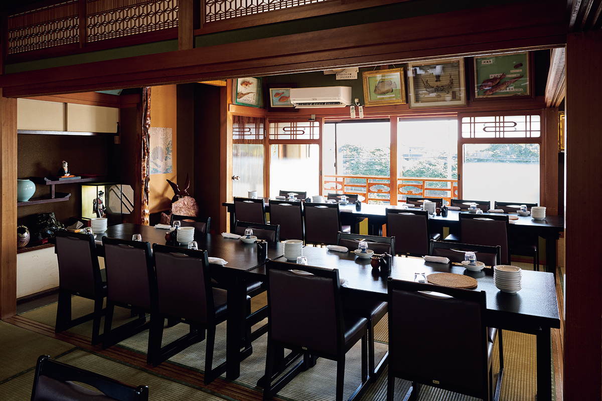
Кагэцу
- Адрес
- префектура Коти, город Мурото, Муроцу, 2586
- Телефон
- +81 887-22-0115
- Часы работы
- 11:00–14:00, в выходные и праздники с 10:30
- Выходные
- не фиксированы
Ямасаки: сухая рыба из Мимасэ
Второй куплет поёт Мимасэ, и неспроста: прибрежное местечко жило рыбной ловлей, и в лучшие годы сушёная рыба сохла рядами прямо на порту. Лавка «Ямасаки» осталась единственной в Мимасэ, где нимоно, сушёную рыбу, делают по-старому. Хозяин верен солнечной сушке на продуваемом ветрами месте, и рыба приходит из лодки его брата, свежая и жирная, из глубины.
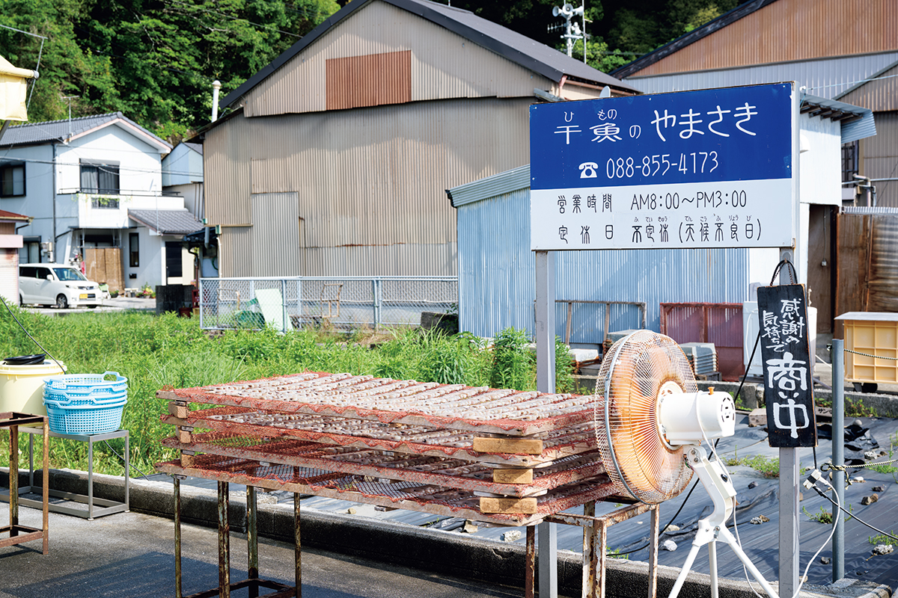
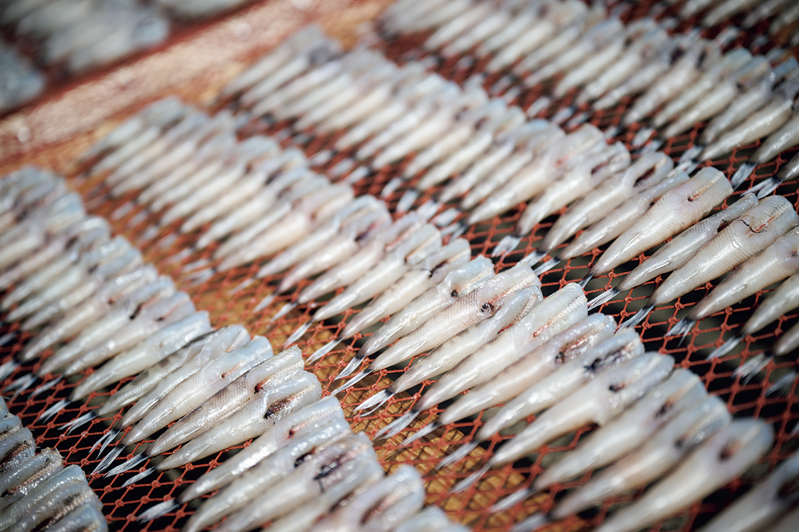
Ямасаки
- Адрес
- префектура Коти, город Коти, Мимасэ, 148
- Телефон
- +81 88-855-4173
- Часы работы
- 8:00–15:00
- Выходные
- среда
Ремёсла
Кацуобуси, шёлк, бумага, кораллы
Хамаёсия: кацуобуси с жирного бонито
Кацуобуси, сушёный копчёный бонито, в Тосе уважали всегда: княжество посылало его в подарок сёгуну Иэясу, основателю династии Токугава. Лавка «Хамаёсия» работает с 1870 года и держит принцип, который отличает её от большинства: для кацуобуси обычно берут постного бонито, а здесь только жирного, у которого ярче собственный вкус. Всё делается руками, без добавок; кроме классических брусков, популярны хлопья, которые достаточно бросить в салат или пасту.
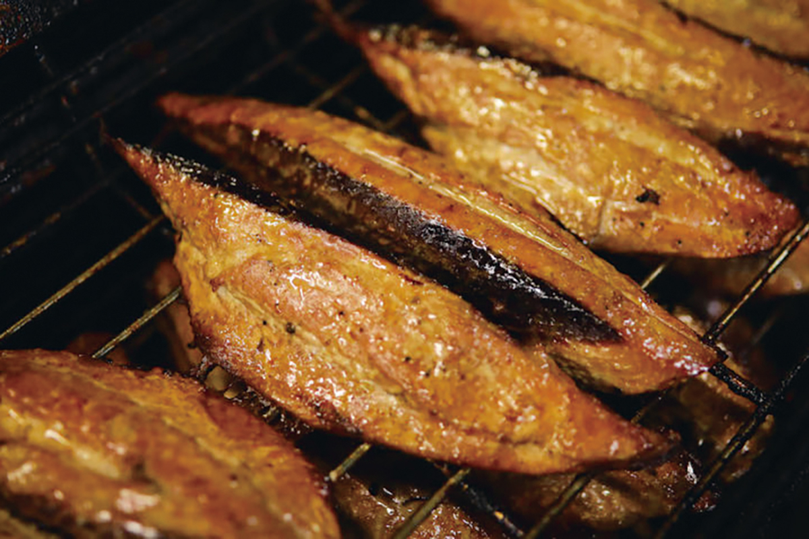
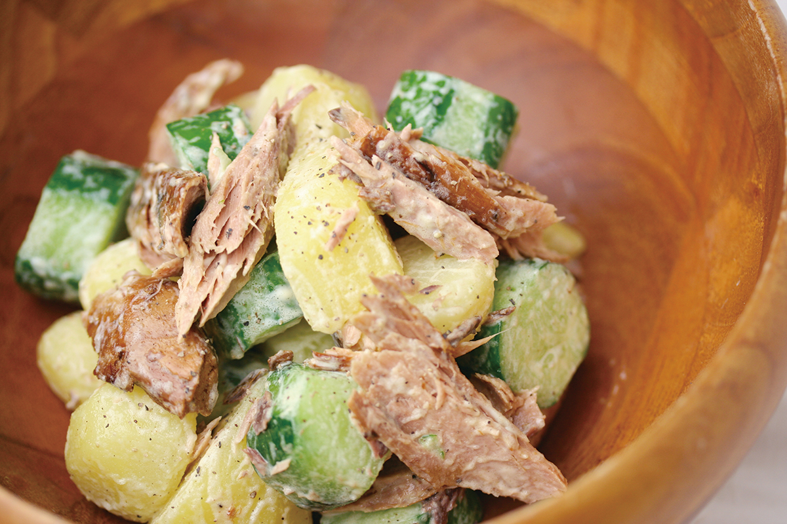
Хамаёсия
- Адрес
- префектура Коти, город Тоса, район Уса, Уса, 1716
- Телефон
- +81 88-856-0045
- Часы работы
- 8:00–17:00
- Выходные
- воскресенье и праздники
- Сайт
- hamayoshiya.com
Тритон: ресторан из шёлковой фабрики
Ресторан «Тритон» в городе Нанкоку работает под лозунгом «местное на местном столе» и стоит на участке в 1 800 цубо, около 5 940 м². Его каркас собрали из стальных ферм и колонн старой шёлковой фабрики: она была крупнейшей в стране по шёлку-сырцу, приглашала мастериц из знаменитой Томиоки, а её шёлк уходил в художественные изделия для императорского двора. Теперь эти фермы держат потолок над обеденным залом.
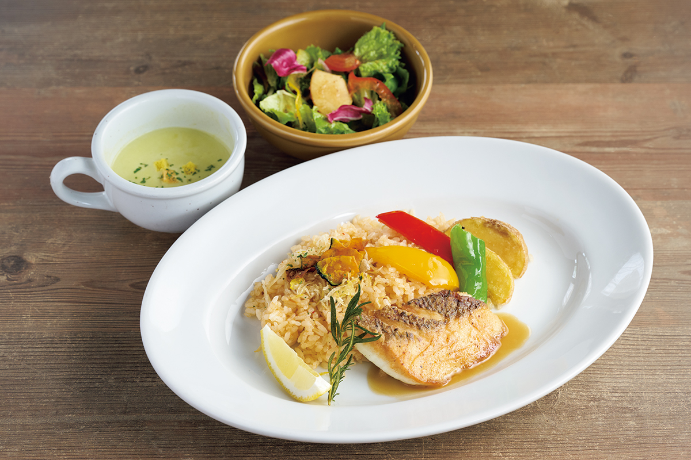
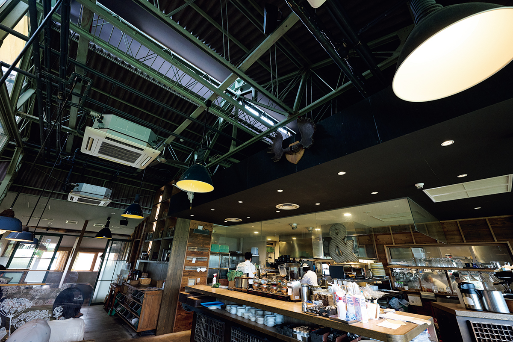
Тритон
- Адрес
- префектура Коти, город Нанкоку, Осонэ-Оцу, 847-1
- Телефон
- +81 88-856-5312
- Часы работы
- 9:00–21:00 (последний заказ 20:30)
- Выходные
- нет
Крауд: ночёвка в стране тоса-васи
Тоса-васи, одну из трёх главных бумаг страны, растили на кодзо, бумажном дереве, и на чистой воде Ниёдо; высший сорт, тоса-тэнгудзёси, до сих пор берут для реставрации культурных ценностей. В посёлке Ино, на берегу Ниёдо, стоит мити-но эки «Крауд», стоянка-мастерская с проживанием. Главная программа здесь, отлив бумаги: зачерпнуть волокно, качнуть раму-сито, стряхнуть воду. Дальше по списку ткачество, ловля голавля-гори, каноэ и даже водный массаж. При стоянке работают магазин местных продуктов и французский ресторан.
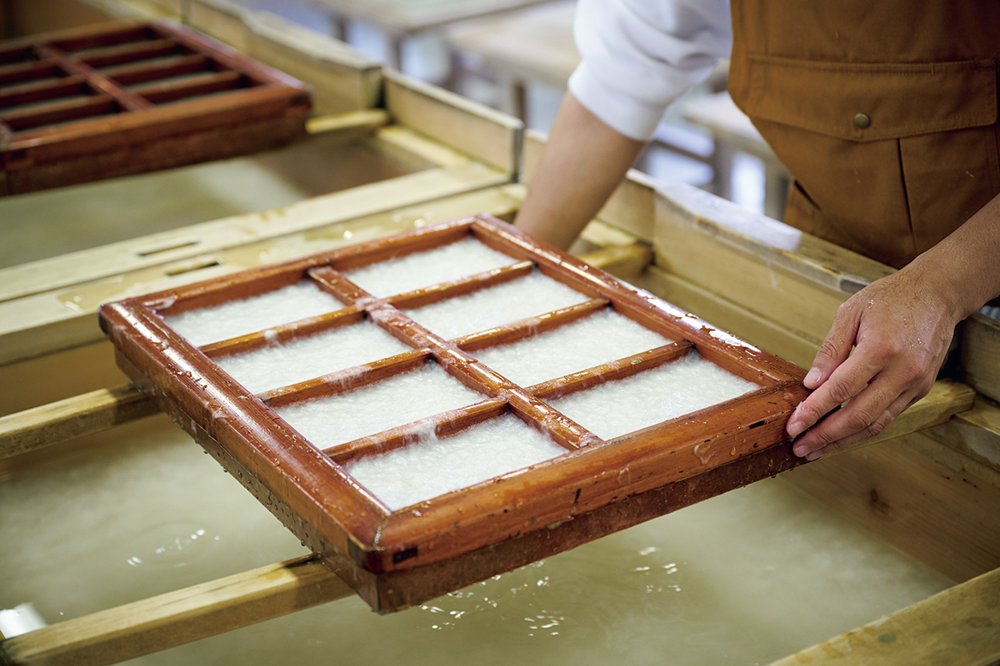
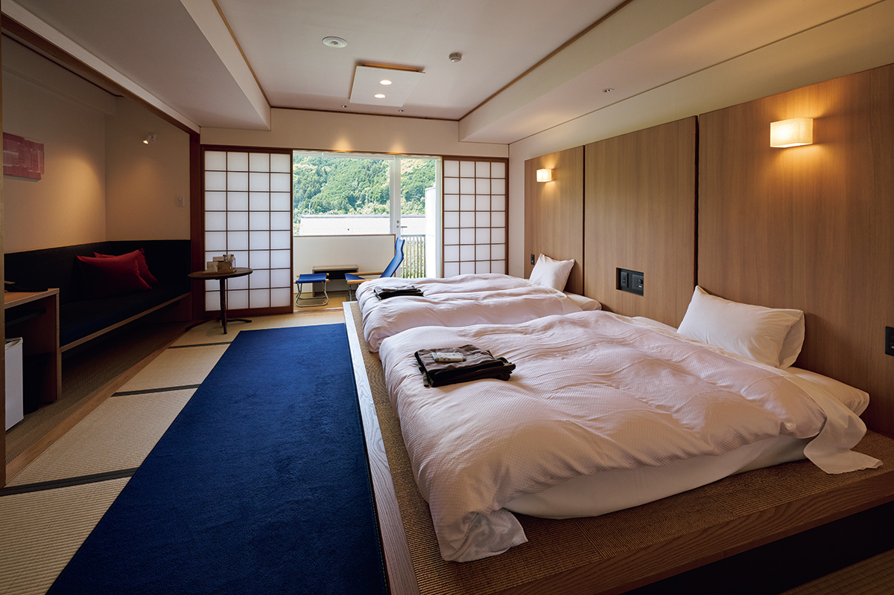
Тоса-васи ремесленная деревня «Крауд»
- Адрес
- префектура Коти, уезд Агава, посёлок Ино, Сисики, 1226
- Телефон
- +81 88-892-1001
- Часы работы
- стоянка 9:00–21:00; опыт бумаги 9:00–17:00 (приём до 16:00); ресторан 11:00–14:00; магазин 8:30–16:00
- Выходные
- среда, включая отель
- Цены
- ночёвка с двухразовым питанием от 20 000 иен (налоги и сборы включены)
- Сайт
- qraud-kochi.jp
Японский центр кораллов
Кораллы замыкают список. У мысов Мурото и Асидзури, со стометровой глубины, поднимают драгоценный коралл трёх видов: красный, розовый и белый, и самый дорогой из них глубококрасный, «кроваво-красный». Растёт коралл треть миллиметра в год, вылов ограничен, а через Коти проходит около восьми десятых всего японского коралла: именно здесь его шлифуют и превращают в украшения. Ювелирная компания World Coral держит музей и магазин: от серьёзных украшений до повседневных вещиц, рядом выставка кораллового искусства. Популярна серия tente, браслет младенцу по местной традиции, и мастер-класс браслета своими руками.
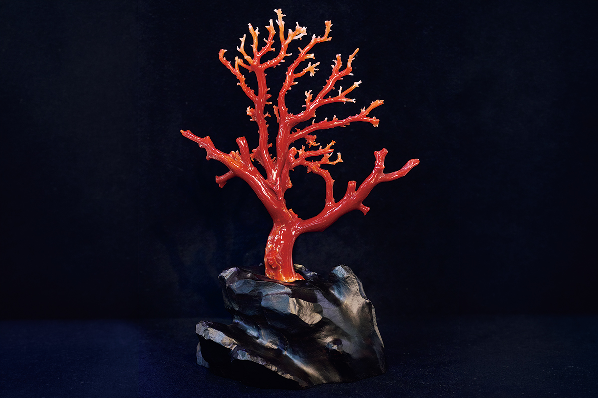
Японский центр кораллов
- Адрес
- префектура Коти, город Коти, Ниита, 187-3
- Телефон
- +81 88-847-5050
- Часы работы
- 10:00–16:00
- Выходные
- нет
- Сайт
- 35c.co.jp
Фото: Саюри Оно.
Куплеты ведут по Коти от китового стола до бумажной рамы, от солнечных рамок с рыбой до коралла со стометровой глубины. Маршрут выходит длинный, но дорога сама ложится по карте.